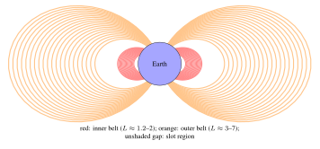

Chapter 3: The Space Environment¶
“Space is not empty. It is full of activity—radiation, plasma, debris, and the breath of the Sun.”
Space may appear to be a void, but the environment through which satellites travel is a complex and hostile mixture of radiation, plasma, neutral gases, micrometeorites, and orbital debris that profoundly challenges spacecraft design (Wertz et al. 2011; Pisacane 2005). Unlike terrestrial engineering environments, spacecraft cannot rely on an atmosphere for cooling, cannot assume benign electromagnetic conditions, and must survive radiation doses that would be lethal to unprotected humans within minutes. This chapter provides a comprehensive treatment of the space environment, from the upper atmosphere through the interplanetary medium, with quantitative models and specific design implications for satellite systems.
3.1 Regions of the Near-Earth Space Environment¶
3.1.1 Thermosphere (80–1000 km)¶
The thermosphere, extending from approximately 80 km to 1000 km altitude, is the uppermost layer of Earth’s atmosphere accessible to drag-affected satellites. Despite being called a “layer,” it is extremely tenuous: at 400 km altitude (ISS), the number density is approximately \(10^{14}\) m\(^{-3}\) (vs. \(2.7 \times 10^{25}\) m\(^{-3}\) at sea level). Temperatures in the thermosphere rise dramatically with altitude due to absorption of solar EUV and X-ray radiation, reaching 600–2500 K depending on solar activity. This strong solar activity dependence makes thermospheric density highly variable and difficult to predict precisely.
3.1.2 Exosphere (> 1000 km)¶
Above approximately 1000 km, the exosphere transitions from a collision-dominated medium to one where individual atom mean free paths exceed the atmospheric scale height. Particles follow ballistic trajectories; those with sufficient energy escape into space. The exobase (base of the exosphere) marks the transition, occurring at a number density of approximately \(10^{11}\) m\(^{-3}\). The dominant constituents are hydrogen (above \(\sim\)1500 km) and helium.
3.1.3 Magnetosphere¶
Earth’s magnetosphere is the region of space dominated by Earth’s intrinsic magnetic field, extending from the surface to approximately 65,000 km on the dayside (compressed by the solar wind) and stretching into a magnetotail extending hundreds of Earth radii on the nightside. The magnetosphere traps energetic charged particles, forming the Van Allen radiation belts (Section 3.5.1), and shields Earth’s surface from the solar wind and cosmic rays. The magnetopause (boundary between magnetosphere and solar wind) varies in location with solar wind dynamic pressure.
3.2 Gravitational Field¶
3.2.1 The Geoid and Spherical Harmonics¶
Earth’s gravitational potential \(U\) is expressed as a series of spherical harmonics:
where \(\phi\) is the geocentric latitude, \(\lambda\) is the longitude, \(P_{nm}\) are associated Legendre polynomials, and \(C_{nm}\), \(S_{nm}\) are gravitational coefficients determined from satellite tracking. The EGM2008 model provides these coefficients to degree and order 2190, enabling geoid height determination with \(\sim\)10 cm accuracy globally. The dominant term is \(C_{20} = -J_2/\sqrt{5} = -4.8417 \times 10^{-4}\), representing Earth’s oblateness as treated in Chapter 2.
3.3 Atmospheric Density Models¶
3.3.1 Exponential Atmosphere Model¶
The simplest useful density model assumes an exponential decrease with altitude:
where \(\rho_0\) is the reference density at base altitude \(h_0\) and \(H\) is the scale height. The scale height is derived from the barometric formula: \(H = kT/(mg) = R_u T/(Mg)\), where \(k\) is Boltzmann’s constant, \(T\) is temperature, \(m\) is mean molecular mass, and \(g\) is gravitational acceleration. Representative values for LEO are given in Table 3.1.
| Alt (km) | \(\rho_{min}\) (kg/m\(^3\)) | \(\rho_{max}\) (kg/m\(^3\)) | \(H\) (km) | Dominant Species |
|---|---|---|---|---|
| 200 | \(2.5 \times 10^{-10}\) | \(5.0 \times 10^{-10}\) | 45 | O, N\(_2\), O\(_2\) |
| 300 | \(1.9 \times 10^{-11}\) | \(9.5 \times 10^{-11}\) | 60 | O, He |
| 400 | \(2.1 \times 10^{-12}\) | \(3.6 \times 10^{-11}\) | 75 | O, He |
| 500 | \(3.0 \times 10^{-13}\) | \(1.3 \times 10^{-11}\) | 85 | O, He |
| 700 | \(\sim 10^{-14}\) | \(\sim 10^{-12}\) | 120 | He, H |
| 1000 | \(\sim 10^{-16}\) | \(\sim 10^{-14}\) | 150 | He, H |
3.3.2 NRLMSISE-00 Model¶
The Naval Research Laboratory Mass Spectrometer and Incoherent Scatter Radar Extended model (NRLMSISE-00) is the standard empirical model for upper atmosphere density and composition. It provides densities of He, O, N\(_2\), O\(_2\), Ar, H, N, and anomalous oxygen as functions of altitude, latitude, longitude, time of day, day of year, solar flux index (F10.7), and geomagnetic activity index (Ap). NRLMSISE-00 captures:
-
The 27-day solar rotation modulation of EUV flux
-
The 11-year solar cycle variation (density variations of 1–2 orders of magnitude at 400 km)
-
Geomagnetic storm enhancements (density increases of 2–5\(\times\) during major storms)
-
Diurnal (day-night) and seasonal variations
The aerodynamic drag on a satellite is computed from:
The ballistic coefficient \(\beta = m/(C_D A_{ref})\) [kg/m\(^2\)] determines sensitivity to drag; SmallSats with large solar panels and low mass can have \(\beta < 10\) kg/m\(^2\), leading to rapid orbital decay, while large GEO communications satellites may have \(\beta > 100\) kg/m\(^2\).
3.4 Solar Radiation Environment¶
3.4.1 Total Solar Irradiance¶
The total solar irradiance (TSI) at 1 AU from the Sun is:
This “solar constant” varies by approximately \(\pm 0.1\%\) over the 11-year solar cycle. The solar spectral irradiance peaks at approximately 500 nm (visible green) and follows approximately a 5778 K blackbody spectrum. UV and EUV components, though small fractions of total power, are responsible for heating the upper atmosphere and producing ionization in the ionosphere. The F10.7 index (solar radio flux at 10.7 cm wavelength, measured in solar flux units, \(1~\text{SFU} = 10^{-22}\) W/m\(^2\)/Hz) is the standard proxy for solar EUV activity, ranging from approximately 65 SFU at solar minimum to \(>\)200 SFU at solar maximum.
3.4.2 The 11-Year Solar Cycle¶
Solar activity follows an approximately 11-year cycle of sunspot number, with significant cycle-to-cycle variability in magnitude and duration. Solar Cycle 25 began in December 2019 and, as of 2025, reached its maximum phase with activity well above the initial forecasts (NOAA and NASA announced in October 2024 that the Sun had entered the solar-maximum period of the cycle). For satellite designers, the solar cycle has two primary implications:
-
Atmospheric density: As described above, higher solar activity dramatically increases upper atmosphere density, reducing orbital lifetimes.
-
Particle radiation: Solar energetic particle (SEP) events and proton fluences are enhanced near solar maximum, increasing radiation doses to satellite electronics.
3.5 The Radiation Environment¶
3.5.1 Van Allen Radiation Belts¶
The Van Allen radiation belts are regions of geomagnetically trapped energetic charged particles—primarily protons and electrons—encircling Earth in the inner magnetosphere. They were discovered by James Van Allen using data from Explorer 1 and Explorer 3 in 1958.
Inner Radiation Belt¶
The inner belt extends from approximately 1000 km to 6000 km altitude (L-shell 1.1 to \(\sim\)2) and is dominated by energetic protons (10 MeV to \(>\)600 MeV) and electrons (100 keV to \(\sim\)1 MeV). Proton fluxes at the heart of the inner belt (\(L \approx 1.5\)) reach \(\sim10^4\) protons/cm\(^2\)/s above 10 MeV. These protons originate primarily from Cosmic Ray Albedo Neutron Decay (CRAND): neutrons produced by cosmic ray spallation on atmospheric nuclei decay into protons and electrons that become trapped.
Outer Radiation Belt¶
The outer belt extends from approximately 13,000 km to 65,000 km (\(L \approx 3\) to \(\sim\)10) and is dominated by highly relativistic electrons (100 keV to \(>\)10 MeV). The outer belt is highly dynamic, with electron fluxes varying by several orders of magnitude during geomagnetic storms. The slot region (\(L \approx 2\)–3, altitude 6000–13,000 km) separates the two belts and is depleted by wave-particle interactions. Electrons in the outer belt originate from the outer magnetosphere and solar wind, energized by wave-particle interactions during geomagnetic activity.

South Atlantic Anomaly¶
The geomagnetic field is not centered on Earth’s geographic center; the magnetic dipole is offset by approximately 450 km toward the Pacific. This offset causes the inner radiation belt to dip closest to Earth’s surface over South America and the South Atlantic—the South Atlantic Anomaly (SAA). The SAA presents significantly elevated radiation over the region \(\sim\)20–50\(^\circ\)S, 10–80\(^\circ\)W. LEO satellites at inclinations above \(\sim\)30\(^\circ\) pass through the SAA on each orbit, receiving a disproportionate fraction of their total radiation dose during SAA transits. Space Shuttle crews and ISS astronauts observe flashes in their visual field (caused by heavy cosmic rays) most frequently during SAA passages.
3.5.2 Galactic Cosmic Rays (GCR)¶
Galactic cosmic rays are high-energy charged particles (\(10^7\)–\(10^{20}\) eV) originating outside the Solar System, primarily from supernova remnants. The GCR spectrum extends over 13 decades in energy, with a spectral index (“knee”) at approximately \(3 \times 10^{15}\) eV. At energies relevant to spacecraft (typically 100 MeV/nucleon to \(\sim\)10 GeV/nucleon), GCR flux is anti-correlated with solar activity (due to solar modulation of the heliospheric magnetic field): GCR flux is maximum at solar minimum.
The GCR composition is approximately 87% protons, 12% alpha particles (\(^4\)He), and 1% heavier nuclei (HZE particles: high charge and energy). Despite their low flux (approximately 4 particles/cm\(^2\)/s at 1 AU for all species combined), GCR ions are highly ionizing and are the primary source of Single Event Effects (SEE) in otherwise well-shielded electronics.
3.5.3 Solar Energetic Particles (SEP)¶
Solar flares and coronal mass ejections (CME) occasionally produce impulsive bursts of energetic protons (10–1000 MeV) and heavy ions that reach Earth within minutes to days. Solar proton events (SPE) can increase proton fluence at Earth by factors of \(10^3\)–\(10^6\) above the GCR background for periods of hours to days. The August 1972 SPE (between Apollo 16 and 17) and the October–November 2003 “Halloween storms” are among the most intense recorded; they would be life-threatening to unprotected astronauts in free space.
SEP events are largely unpredictable in occurrence, though their probability is correlated with solar activity phase (elevated within \(\pm\)2 years of solar maximum). Robust SPE shielding for crewed deep-space vehicles is a major challenge for lunar and Mars exploration.
3.6 Radiation Effects on Electronics¶
3.6.1 Total Ionizing Dose (TID)¶
Total Ionizing Dose (TID) is the cumulative energy deposited by ionizing radiation (electrons, protons, heavy ions, photons) in a material, measured in gray (Gy, J/kg) or the traditional unit rad (1 rad = 0.01 Gy = 10 mGy). In semiconductor devices, TID effects include (Messenger and Ash 1997):
-
Threshold voltage shift (\(\Delta V_{th}\)) in MOSFETs: ionizing radiation creates electron-hole pairs in the gate oxide; holes are trapped at the Si–SiO\(_2\) interface, causing positive oxide-trapped charge \(N_{ot}\) and interface trap charge \(N_{it}\):
\[\Delta V_{th} = -\frac{qN_{ot}}{C_{ox}} \pm \frac{qN_{it}}{C_{ox}}\tag{3.5}\] -
Increased leakage current: Radiation-induced oxide charges invert the channel under field oxide regions, creating parasitic leakage paths between adjacent NMOS transistors (“field inversion”).
-
Gain degradation in bipolar transistors: enhanced low-dose-rate sensitivity (ELDRS) in linear bipolar circuits can cause more damage at low dose rates (as encountered in space) than at high dose rates used in ground testing—a critical concern for devices tested at accelerated rates.
Annual dose depends strongly on orbit and shielding. Behind a few millimetres of aluminium, low-inclination LEO below about 600 km accumulates comparatively little dose, whereas orbits that cross the proton belt or dwell in the outer electron belt (including parts of MEO) accumulate far more; GEO lies in between and is dominated by outer-belt electrons and solar protons. Mission-specific values must be computed with the trapped-particle models and dose-depth tools described in Section 3.7.2.
Design approach: Parts are characterized by their TID tolerance (“TID hardness”), typically by ground irradiation with a \(^{60}\)Co gamma source. Design Total Dose (DTD) is computed as:
where \(TID_{natural}\) is the computed natural environment dose and \(RDM\) is the Radiation Design Margin (typically 2–3\(\times\), per ECSS-E-ST-10-12C). Space-grade radiation-hardened (RadHard) parts are qualified to 300 krad(Si) to \(>\)1 Mrad(Si).
3.6.2 Single Event Effects (SEE)¶
Single Event Effects are caused by a single ionizing particle traversing a sensitive volume in a semiconductor device, depositing sufficient charge to cause a functional disturbance. The ionizing effectiveness of a particle is characterized by its Linear Energy Transfer (LET), measured in MeV cm\(^2\)/mg:
where \(dE/dx\) is the stopping power and \(\rho\) is the material density (for silicon: \(\rho = 2.33\) g/cm\(^3\)). Protons and heavy ions can cause SEE; heavy nuclei (HZE) from GCR have high LET and are the dominant SEE source in deep space.
Single Event Upset (SEU)¶
A Single Event Upset (SEU) is a bit flip in a memory cell or register caused by the charge deposited along an ion track. The critical charge \(Q_c\) required to cause a bit flip depends on the device technology:
where \(C_{node}\) is the storage node capacitance and \(V_{DD}\) is the supply voltage. As technology nodes scale below 65 nm, \(Q_c\) decreases (smaller capacitances, lower \(V_{DD}\)), increasing SEU sensitivity. The SEU cross-section (effective area per bit) versus LET is empirically described by a Weibull function (Stassinopoulos and Raymond 1988):
where \(\sigma_{sat}\) is the saturation cross-section, \(L_{th}\) is the threshold LET, \(W\) is the width parameter, and \(s\) is the Weibull shape parameter. SEU rates are computed by convolving this curve with the GCR heavy ion LET spectrum.
Single Event Latch-Up (SEL)¶
SEL is a high-current state in CMOS devices caused by triggering of a parasitic pnpn thyristor structure. If undetected and uncorrected, SEL causes permanent device failure through thermal burnout. SEL is mitigated by:
-
Using latch-up-immune CMOS processes (SOI technology, radiation-hardened layout with guard rings)
-
Current limiting and monitoring with automatic power cycling
Single Event Transient (SET)¶
An SET is a voltage transient induced in a combinational logic node by ion-induced charge collection. In linear circuits (analog-to-digital converters, oscillators), SETs can cause output errors. In digital circuits, SETs captured by flip-flops become SEUs. SET pulse widths increase with technology scaling.
Single Event Functional Interrupt (SEFI)¶
SEFIs are higher-level SEE phenomena where an ion strike causes a complex device (microprocessor, FPGA, memory controller) to enter a non-operational state requiring reset. SEFIs can disrupt data products and satellite operations for extended periods.
| SEE Type | Mechanism | Consequence | Mitigation |
|---|---|---|---|
| SEU | Charge deposition in memory cell | Bit flip (soft error); data corruption | EDAC, TMR, scrubbing |
| SEL | Parasitic thyristor trigger | High current; device destruction | Current limiting; SOI; guard rings |
| SET | Transient current in logic | Erroneous output pulse | Filtering; hardened flip-flops |
| SEFI | State machine corruption | Loss of function; reset needed | Watchdog timers; command recovery |
| SEB | Secondary breakdown in power MOSFET | Destructive (hard error) | Voltage derating; guard rings |
| SEGR | Oxide rupture in power MOSFET | Destructive (hard error) | Voltage derating |
3.6.3 Displacement Damage Dose (DDD)¶
Displacement Damage (DD) occurs when energetic protons or neutrons knock atoms from their lattice positions in semiconductors, creating vacancy-interstitial (Frenkel) pairs and larger defect clusters. Unlike TID (which primarily affects oxide charges), DD degrades the bulk semiconductor:
-
Solar cells: Reduction of minority carrier diffusion length degrades photovoltaic conversion efficiency. GaAs/Ge solar cells lose approximately 20–30% efficiency over a 15-year GEO mission; InGaP/GaAs/Ge multi-junction cells are more radiation-resistant.
-
Bipolar transistors: Reduced current gain (beta) due to increased minority carrier recombination in the base region.
-
CCD imagers: Increased charge transfer inefficiency (CTI), degrading spatial resolution; increased dark current, raising noise floor.
The displacement damage dose is computed using Non-Ionizing Energy Loss (NIEL) cross-sections, analogous to LET for ionizing effects:
3.7 Radiation Environment Models¶
3.7.1 AP8/AE8 Models¶
The AP8 (trapped proton) and AE8 (trapped electron) models are static, empirical models of the time-averaged trapped particle environment in the inner magnetosphere, parameterized by L-shell and B/B\(_0\) (ratio of local to minimum field strength on an L-shell). AP8 and AE8 provide omnidirectional integral flux as a function of energy for two solar conditions (MIN and MAX). Despite their age (data primarily from 1960s–1970s era satellites), they remain widely used due to their simplicity and broad acceptance.
Limitations of AP8/AE8: no temporal dynamics, no energy spectra for electrons below 40 keV or protons below 0.1 MeV, poor accuracy in the slot region and at high L-shells, and they predate the discovery of a third, transient radiation belt (a storage ring observed by the Van Allen Probes in 2013 following a solar storm in September 2012).
3.7.2 AP9/AE9/SPM Models¶
The AP9/AE9/SPM (Space Plasma Model) framework, developed by the U.S. Air Force Research Laboratory with partners including The Aerospace Corporation and MIT Lincoln Laboratory, provides a next-generation probabilistic trapped radiation environment model. Key advances over AP8/AE8:
-
Modern multi-satellite dataset spanning several decades, including data from more recent missions
-
Mean and percentile flux outputs (e.g., 95th percentile for worst-case design)
-
Monte Carlo sampling to estimate flux uncertainty
-
Coverage of roughly 1 keV–10 MeV electrons and 1 keV–400 MeV protons (see the model documentation for exact ranges per version)
-
Temporal dynamics of storm-enhanced electron populations
3.8 Micrometeorite and Orbital Debris Environment¶
3.8.1 Natural Meteoroid Environment¶
The natural meteoroid environment consists of rocky and metallic particles from cometary and asteroid sources. The flux of meteoroids in near-Earth space is given by the Grün meteoroid flux model, which provides omnidirectional flux as a function of mass:
where \(F\) is the cumulative flux in m\(^{-2}\)s\(^{-1}\) and \(m\) is mass in kg. Meteoroids travel at typical speeds of 10–72 km/s relative to Earth (mean \(\approx\)20 km/s). The natural meteoroid flux is relatively constant except during meteor showers (Perseids, Leonids, etc.) when Earth passes through cometary debris streams.
3.8.2 Orbital Debris Environment¶
The orbital debris environment—human-made objects in orbit—has grown dramatically since the beginning of the Space Age. As of the mid-2020s (ESA and U.S. Space Surveillance Network estimates, rounded):
-
\(\sim\)30,000 objects regularly tracked and catalogued by the U.S. Space Surveillance Network (roughly \(>\)10 cm in LEO, \(>\)1 m in GEO); ESA estimates about 50,000 objects larger than 10 cm
-
\(\sim\)1 million (ESA model estimate, about 1.2 million) objects in the 1–10 cm range (too small to track, large enough to cause catastrophic damage)
-
\(\sim\)100–140 million objects in the 1 mm–1 cm range (penetrate shielding, cause subsystem failures)
The primary debris-generating events were the 2007 Chinese ASAT test (Fengyun-1C, generated \(>\)3500 tracked fragments) and the 2009 Iridium–Cosmos collision (generated \(>\)2000 tracked fragments).
The MASTER-8 (ESA) and ORDEM 3.2 (NASA) engineering models provide debris flux as a function of object size, altitude, inclination, and epoch. Hypervelocity impacts (HVI) at relative velocities of 7–15 km/s in LEO generate secondary debris ejecta, contributing to the cascading “Kessler syndrome” concern (Kessler and Cour-Palais 1978).
| Min. Diameter (cm) | Flux (m\(^{-2}\)yr\(^{-1}\)) | Consequence of Impact |
|---|---|---|
| 0.01 | \(\sim 10^3\) | Surface erosion, slight degradation |
| 0.1 | \(\sim 10^1\) | Local cratering; subsystem risk |
| 1 | \(\sim 10^{-1}\) | Major subsystem damage |
| 5 | \(\sim 10^{-3}\) | Potential spacecraft loss |
| 10 | \(\sim 10^{-4}\) | Catastrophic fragmentation |
3.8.3 Hypervelocity Impact Physics¶
At impact velocities above approximately 3 km/s, projectile and target both undergo shock-induced vaporization and melting, creating an expanding debris cloud. The Whipple shield—a thin “bumper” plate separated by a standoff from the main structure—exploits this: the bumper vaporizes the impacting particle, dispersing energy and material over a larger area before reaching the critical structure. The NASA Ballistic Limit Equation (BLE) for a Whipple shield predicts the critical projectile diameter \(d_c\) for a given shield configuration:
where \(t_b\) is bumper thickness, \(t_w\) is rear wall thickness, \(\rho_b\) and \(\rho_p\) are bumper and projectile densities, \(v_{rel}\) is impact velocity, \(\sigma_w\) is wall yield strength, and \(K_1\), \(\alpha\) are empirical constants. ISS uses multi-layer Whipple shields providing protection against aluminum sphere impactors of roughly 1 cm diameter at \(\sim\)7 km/s in critical habitable volumes (the exact limit depends on module and impact angle).
3.9 Neutral Atomic Oxygen (ATOX)¶
In LEO (200–600 km altitude), the dominant neutral species is atomic oxygen (O), formed by photodissociation of molecular O\(_2\) by solar UV. Unlike the quiescent molecular oxygen encountered at sea level, LEO atomic oxygen is highly reactive. Satellites traveling at \(\sim\)7.7 km/s encounter an ATOX flux of approximately \(10^{14}\)–\(10^{15}\) atoms/cm\(^2\)/s, equivalent to an atom bombardment energy of \(\sim\)5 eV.
ATOX erosion is characterized by the reaction efficiency (erosion yield) \(R_E\) [cm\(^3\)/atom]. For commonly used spacecraft materials:
-
Kapton polyimide: \(R_E \approx 3.0 \times 10^{-24}\) cm\(^3\)/atom; erosion rate at 400 km \(\approx 1.5\) µ m/day
-
Mylar: \(R_E \approx 3.4 \times 10^{-24}\) cm\(^3\)/atom
-
Carbon/carbon composite: \(R_E \approx 2.0 \times 10^{-25}\) cm\(^3\)/atom
-
Fused silica, Al\(_2\)O\(_3\), metals: highly resistant (\(R_E < 10^{-26}\) cm\(^3\)/atom)
-
Ag (silver interconnects): oxidized by ATOX to Ag\(_2\)O, increasing resistance
The surface recession rate \(r_{eros}\) for a material at 90\(^\circ\) to the velocity vector is:
where \(F_{ATOX}\) [atoms/cm\(^2\)/s] is the ATOX flux. Kapton on LDEF (Long Duration Exposure Facility, about 5.7 years in orbit at altitudes decreasing from about 480 to 340 km) showed recession of several hundred micrometers, consistent with ground predictions.
3.10 Plasma Environment and Spacecraft Charging¶
3.10.1 Ionospheric and Magnetospheric Plasma¶
Spacecraft in LEO and GEO are immersed in plasma (ionized gas). In LEO, the ionospheric plasma has:
-
Electron density: \(n_e \approx 10^{10}\)–\(10^{12}\) m\(^{-3}\) (F-region)
-
Electron temperature: \(T_e \approx 1000\)–\(3000\) K (\(\approx 0.1\)–0.3 eV)
-
Ion composition: primarily O\(^+\) at 200–700 km; H\(^+\) above
In GEO, the magnetospheric plasma is hotter and more tenuous:
-
\(n_e \approx 10^6\)–\(10^8\) m\(^{-3}\)
-
\(T_e \approx 0.1\)–30 keV (highly variable with geomagnetic activity)
3.10.2 Debye Shielding¶
The Debye length \(\lambda_D\) is the characteristic distance over which the electrostatic potential of a charged object in plasma is shielded by the plasma electrons:
In LEO, \(\lambda_D \approx 1\) cm; in GEO, \(\lambda_D \approx 100\) m to several km during storms. When the spacecraft is much larger than \(\lambda_D\) (LEO), the charging problem is relatively benign. When \(\lambda_D\) is comparable to or larger than the spacecraft (GEO), complex differential charging effects can arise.
3.10.3 Spacecraft Charging Mechanisms¶
Spacecraft floating potential \(V_f\) is determined by the balance of ambient electron and ion currents plus any active current sources (e.g., solar array):
In GEO, hot electron fluxes dominate and spacecraft charge to large negative potentials (tens to hundreds of volts, occasionally kilovolts during substorms). Differential charging between adjacent surfaces of different materials can create large potential differences (\(\Delta V > 1000\) V), leading to electrostatic discharge (ESD) arcs that can:
-
Inject currents into nearby electronics, causing upsets or damage
-
Create surface contamination by re-deposited arc byproducts
-
Catastrophically damage solar array strings (as occurred on multiple GEO satellites)
In LEO, the primary concern is “absolute charging” of high-voltage solar arrays: electrostatic interaction between high-voltage array strings and the surrounding plasma can lead to arcing when array strings are biased more than roughly 100 V negative with respect to the plasma (the threshold depends on array design and materials).
3.10.4 Mitigation Techniques¶
Spacecraft charging is mitigated by:
-
Surface conductivity: External surfaces should be sufficiently conductive to drain charge (surface resistivity of the order of \(10^{9}\) \(\Omega\) per square or lower, per ECSS-E-ST-20-06C)
-
Grounding: All metallic structures grounded to the spacecraft chassis
-
Active plasma contactors: Plasma electron guns or neutral gas ionizers to maintain potential
-
Bleed resistors: Connecting isolated conductors through high resistances to chassis
3.11 Thermal Environment¶
3.11.1 Heat Sources and Sinks in Space¶
The thermal environment of a spacecraft is determined by the balance of energy exchange with the space environment. The primary sources are (Gilmore 2002):
-
Direct solar irradiance: \(Q_{solar} = \alpha_s \cdot S_\odot \cdot A_{sun}\), where \(\alpha_s\) is the surface solar absorptivity and \(A_{sun}\) is the projected area toward the Sun.
-
Earth infrared (IR) emission: Earth radiates as a blackbody at approximately 255 K, with an average flux of approximately 240 W/m\(^2\) at its surface, diminishing with altitude. For a satellite at altitude \(h\):
\[Q_{EIR} = \varepsilon \cdot J_{EIR} \cdot A_{Earth} \cdot F_{sat-Earth}\tag{3.16}\]where \(J_{EIR} \approx 240\) W/m\(^2\), \(A_{Earth}\) is the area facing Earth, \(\varepsilon\) is the surface emissivity, and \(F_{sat-Earth}\) is the view factor.
-
Earth albedo: Earth reflects approximately 30% of incident solar radiation (albedo \(\alpha_{Earth} \approx 0.30\), highly variable with cloud cover and surface type). The albedo flux experienced by a satellite depends on its attitude and orbital position.
-
Internal dissipation: Heat from electronic components, battery charging/discharging, and mechanical actuators must be conducted or radiated to space.
The only heat rejection mechanism available in the vacuum of space is thermal radiation:
where \(\sigma = 5.67 \times 10^{-8}\) W/m\(^2\)K\(^4\) (Stefan-Boltzmann constant), \(T\) is absolute surface temperature, and \(A_{rad}\) is radiator area. This fundamental limitation drives thermal control system design.
| Surface Finish | \(\alpha_s\) | \(\varepsilon\) | Primary Use |
|---|---|---|---|
| White paint (Z-93, S13G) | 0.13–0.18 | 0.85–0.92 | Radiators, sunlit panels |
| Black paint (MAP Velvet Black) | 0.97 | 0.97 | Internal surfaces, baffles |
| Aluminized Kapton (tape) | 0.14–0.21 | 0.04–0.08 | MLI outer layer |
| Second surface mirror (OSR) | 0.07 | 0.80 | High-efficiency radiators |
| Bare aluminum (polished) | 0.08–0.18 | 0.02–0.04 | Structural elements |
| Bare aluminum (anodized) | 0.14–0.40 | 0.70–0.85 | Structure, moderate heating |
| Titanium (bare) | 0.45–0.50 | 0.10–0.20 | Structural hardware |
| Solar cell cover glass (Cerium) | \(\sim0.75\) | \(\sim0.85\) | Solar array front surface |
3.12 Space Weather¶
3.12.1 Geomagnetic Storms¶
Geomagnetic storms are global disturbances of Earth’s magnetic field caused by enhanced solar wind pressure and southward-directed interplanetary magnetic field (IMF \(B_z < 0\)), typically associated with CMEs and Co-rotating Interaction Regions (CIRs). Storm intensity is characterized by:
-
Kp index: A 3-hourly geomagnetic planetary index, scale 0–9 (0: quiet; 9: extreme storm)
-
Dst index: Hourly disturbance storm-time index, measuring ring current enhancement; Dst \(<\) -50 nT: moderate storm; \(<\) -100 nT: intense; \(<\) -250 nT: extreme
Effects of major geomagnetic storms on satellite operations include:
-
Orbital drag increase in LEO by 2–10\(\times\), causing altitude loss and constellation disruption
-
Enhanced outer radiation belt electron flux (MeV electrons, dangerous to GEO)
-
Surface charging of GEO satellites
-
Ionospheric scintillation affecting GNSS and communications signal quality
-
Induced currents in long ground conductors (power grids, pipelines)
The February 2022 SpaceX rideshare event illustrated drag effects dramatically: 38 of 49 newly launched Starlink satellites were lost when a geomagnetic storm increased atmospheric density at their initial deployment altitude (\(\sim\)210 km), generating drag that prevented them from raising their orbits before re-entry.
3.12.2 Ionospheric Disturbances and GNSS Effects¶
The ionosphere introduces a dispersive delay on GNSS signal propagation:
where \(TEC\) is the Total Electron Content along the signal path (in TECU, \(1~\text{TECU} = 10^{16}\) el/m\(^2\)), \(c\) is the speed of light, and \(f\) is the signal frequency. At solar maximum and mid-latitudes, TEC can reach 200 TECU, producing ranging errors of \(\sim\)30 m on L1. Dual-frequency receivers (L1/L2 or L1/L5 for GPS) can eliminate the first-order ionospheric error by exploiting its frequency dependence.
During geomagnetic storms, rapid spatial and temporal variations in TEC (ionospheric scintillation) can cause signal-to-noise ratio (SNR) fluctuations sufficient to cause loss of lock on GNSS receivers, degrading positioning availability.
3.13 Summary of Environmental Design Drivers¶
Design Implications of the Space Environment:
-
Radiation (TID, SEE, DDD): Select radiation-tolerant or radiation-hardened parts; provide shielding; implement EDAC and watchdog circuits; verify against radiation models (AP9/AE9) with appropriate design margins.
-
Thermal: Design radiators for the hot case (eclipse exit + full power); use MLI for cold case protection; verify thermal balance with detailed lumped-parameter or finite-element models.
-
Atomic oxygen: Coat or protect polymer materials (Kapton) on LEO surfaces with aluminum or SiO\(_x\) coatings; avoid exposed silver on surfaces facing the velocity vector.
-
Plasma charging: Ground all external conducting surfaces; ensure surface conductivity; implement high-resistance grounding for isolated conductors; test per ECSS-E-ST-20-06C.
-
Orbital debris: Size Whipple shield for protection against 1 cm impactors; orient critical components away from ram direction; comply with the applicable post-mission disposal requirements (the IADC guideline is 25 years; for U.S.-licensed LEO satellites the FCC adopted a 5-year rule in 2022, in force as of 2025).
-
Drag: Accurately model atmospheric density variability; include delta-v margin for drag makeup; design for worst-case solar maximum for LEO missions.
Problems¶
-
Using the exponential atmosphere model (Table 3.1) and the drag equation, estimate the orbital lifetime of a 3U CubeSat (mass 4 kg, cross-sectional area \(0.01\) m\(^2\), \(C_D = 2.2\)) deployed at 400 km altitude during solar minimum. Repeat for solar maximum. How different are the lifetimes?
-
A MOSFET device has \(C_{ox} = 10\) nF/cm\(^2\), and radiation-induced oxide charge density \(N_{ot} = 5 \times 10^{11}\) cm\(^{-2}\) after 50 krad(Si) TID exposure. Compute the threshold voltage shift. If the nominal \(V_{th} = 0.5\) V, is the device operational after irradiation?
-
Compute the Debye length in LEO at 400 km altitude (\(n_e = 10^{11}\) m\(^{-3}\), \(T_e = 2000\) K) and in GEO during a storm (\(n_e = 10^7\) m\(^{-3}\), \(T_e = 10\) keV). Discuss the implications for spacecraft charging in each environment.
-
A spacecraft surface has \(\alpha_s = 0.15\) and \(\varepsilon = 0.85\). In Earth orbit at 1 AU from the Sun, no Earth albedo or IR, at what equilibrium temperature does the surface settle (solar only, satellite in sunlight)? \(S_\odot = 1361\) W/m\(^2\).
-
Estimate the ATOX erosion of a Kapton MLI blanket (thickness 50 µ m) on a satellite at 500 km altitude for a 5-year mission. Use the Grün/Banks erosion yield \(R_E = 3.0 \times 10^{-24}\) cm\(^3\)/atom and ATOX flux \(F = 2 \times 10^{14}\) atoms/cm\(^2\)/s. Will the blanket survive?